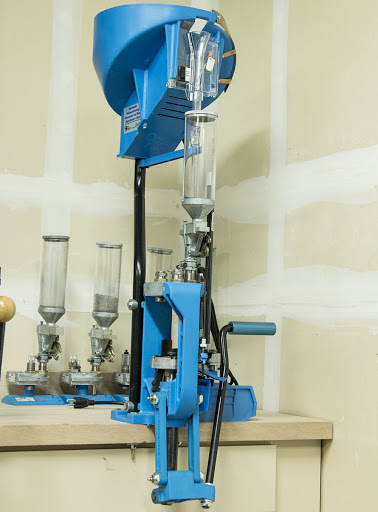
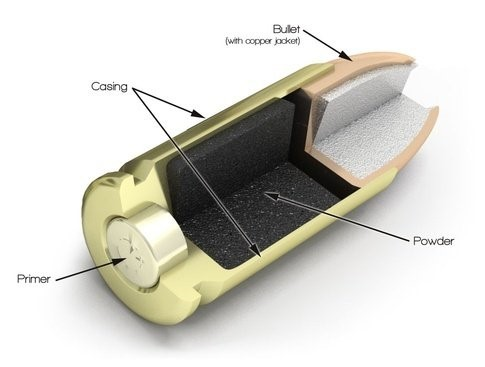
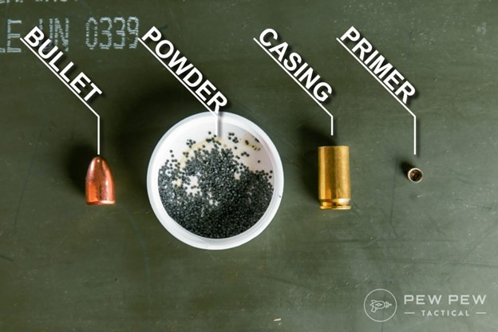

There is a lot of very ability in over the counter ammunition that could lead to inaccuracy when shooting competitively.
Over the year’s ammo has become expensive, with reloading you can save money over time.
When you build a firearm for shooting completely a lot of times it will require ammo made specifically for it.
Ultimately this will be a condensed version of how to reload ammunition the process is very involved and uses lots of equipment.
As well as there are different types of equipment that can vastly change how you would go about the process of reloading.
I am going to take the liberty to skip over cleaning and preparing brass to be reloaded as well as testing reloaded ammunition to ensure it is safe and ready for use.
Please do not use this website as a guide for reloading do your research before attempting this and seek out experts in reloading ammunition before you start this very rewarding hobby.
For the purposes of this page I will assume you’re interested in or have a progress press. A progressive press accomplishes several tasks with every pull of the press handle.
My press the Dillion 650xl has several stations that do task currently such as.
Station one will deprime and resize the case
Station two will insert a new primer, flare the lip of the case, and fill the case with powder.
Station three checks to make sure there is enough powder and will sound an alarm if it is under or over.
Station four will insert a bullet and seat it into the case.
Station five will crimp the case to keep the bullet in place.
Here is a picture of the Dillion 650xl progressive press.

Here are some bullet cutaways


This is a really good video of someone using a Dillion 650xl